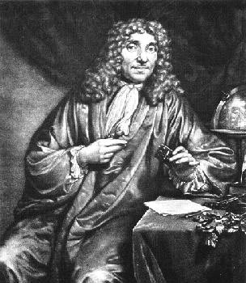
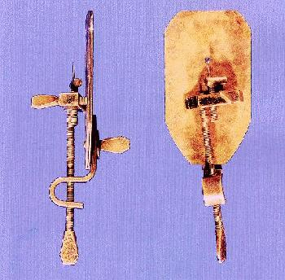

Antoni van Leeuwenhoek
Antoni van Leeuwenhoek (1632-1723) was een opmerkelijke persoonlijkheid en een Renaissance figuur in de ware zin van het woord. Hij was een van die typische getalenteerde amateurs van die tijd die de beginselen van de natuurwetenschappen hielpen leggen. Doorgaans wordt hij in biografieën de “de conciërge van Delft” genoemd. Deze term is echter een beetje misleidend. Hij was een soort beheerder die heel wat bevoegdheden had op gemeentelijk vlak. Van beroep was hij echter een welvarende textielhandelaar die tevens heel wat andere interesses had; zo werd hij gefascineerd door de nieuwe ontwikkelingen in de optica en legde hij zich toe op het visualiseren van kleine dingen. Net zoals Newton en co. altijd maar betere telescopen ontwikkelden, vond hij min of meer op zijn eentje de microscoop uit. Zelfs als kranige 80-jarige bleef hij onderzoek doen in het domein van de microscopische structuren.

Dit is een exacte replica van een van de originele instrumenten die door Van Leeuwenhoek werden vervaardigd. Hij maakte er honderden waarvan er spijtig genoeg maar 9 de tand des tijds overleefd hebben.
De Leeuwenhoek-microscoop bestaat uit twee platte koperen platen (sommige werden uit zilver of goud vervaardigd) met daartussenin een enkele lens. De lens was van het dubbele convexe type, geslepen tot specifieke krommingen en gepolijst. Het instrument werkte als volgt: het preparaat werd op een pin geprikt aan de voorkant van de lens. Vervolgens werd de positie van het specimen aangepast d.m.v. schroeven tot het zich precies onder het brandpunt bevond. Uiteraard maakte Van Leeuwenhoek zijn lenzen met de hand waarbij hij een beroep deed op trial-and-error-methoden. Naar onze maatstaven mag een dergelijk instrument er misschien primitief en onnauwkeurig uitzien, toch bracht het een revolutie in de biologie teweeg. Van Leeuwenhoek slaagde er met dit instrument in beschrijvingen te geven van met trilhaartjes bedekte protozoën afkomstig van het water van een vijver, alsook van rode bloedcellen en zelfs van bacteriën afkomstig van afschraapsels van tanden. Zijn beschrijvingen van zenuwstructuren zijn vrij accuraat, zelfs naar onze huidige standaard.
De Leeuwenhoek-microscoop bestaat uit twee platte koperen platen (sommige werden uit zilver of goud vervaardigd) met daartussenin een enkele lens. De lens was van het dubbele convexe type, geslepen tot specifieke krommingen en gepolijst. Het instrument werkte als volgt: het preparaat werd op een pin geprikt aan de voorkant van de lens. Vervolgens werd de positie van het specimen aangepast d.m.v. schroeven tot het zich precies onder het brandpunt bevond. Uiteraard maakte Van Leeuwenhoek zijn lenzen met de hand waarbij hij een beroep deed op trial-and-error-methoden. Naar onze maatstaven mag een dergelijk instrument er misschien primitief en onnauwkeurig uitzien, toch bracht het een revolutie in de biologie teweeg. Van Leeuwenhoek slaagde er met dit instrument in beschrijvingen te geven van met trilhaartjes bedekte protozoën afkomstig van het water van een vijver, alsook van rode bloedcellen en zelfs van bacteriën afkomstig van afschraapsels van tanden. Zijn beschrijvingen van zenuwstructuren zijn vrij accuraat, zelfs naar onze huidige standaard.
